Part Context
Part: Part 3 - Distributed Systems Concepts
Position: Chapter 11 of 60
Why this part exists: This section explains the trade-offs that appear once systems scale across machines, replicas, regions, and failure domains.
This chapter builds toward: replication-aware design, partition behavior reasoning, and consistency decisions grounded in business impact
Overview
Once data is copied across nodes, racks, or regions, you no longer get a single obvious truth for free. Consistency is the set of guarantees about how quickly different readers see the same value after writes occur. In distributed systems, this becomes a business decision as much as a technical one.
CAP theorem is often memorized poorly. Its real value is in forcing architects to think clearly about what a system should do during network partitions. This chapter connects strong consistency, eventual consistency, and CAP trade-offs to real product behavior rather than abstract slogans.
Why This Matters in Real Systems
- Replication improves scale and availability but creates difficult questions about stale data and coordination.
- Different features in the same product often need different consistency guarantees.
- Incorrect consistency assumptions cause some of the most damaging production bugs in distributed systems.
- Interviewers use this topic to distinguish memorized distributed-systems terminology from real design judgment.
Core Concepts
Strong consistency
Readers observe the latest committed write according to the system guarantee, often requiring coordination and possibly higher latency.
Eventual consistency
Replicas may temporarily diverge, but if updates stop they converge over time. This often improves availability or locality but introduces staleness.
CAP theorem
When a partition exists, a distributed system cannot simultaneously offer strong consistency and full availability across the partitioned nodes.
Business-level trade-offs
The right consistency model depends on whether stale data creates inconvenience, confusion, money loss, or safety risk.
Key Terminology
| Term | Definition |
|---|---|
| Strong Consistency | A guarantee that reads reflect the latest committed write according to the system model. |
| Eventual Consistency | A model in which different replicas may lag but are expected to converge. |
| Partition | A network failure that prevents some nodes from communicating reliably with others. |
| Replica | A copy of data kept on another node or in another region. |
| Quorum | A rule that requires a minimum number of replicas to participate in a read or write. |
| Staleness | The amount by which a read lags behind the newest committed value. |
| Conflict Resolution | The logic used to reconcile concurrent or divergent updates. |
| Leader | A node or role that coordinates writes for a partition or shard. |
Detailed Explanation
Consistency is user experience
If one user sees a payment as completed while another service still sees it as pending, this is not a theoretical inconsistency. It is a product error with real consequences. Likewise, if a social “like” count lags by a few seconds, the product may remain perfectly acceptable. Business context determines how much staleness matters.
CAP matters specifically during partitions
CAP does not say a system must permanently choose consistency or availability in all situations. It says that when network partitions occur, distributed nodes cannot provide both immediate consistency and unconditional availability across the split. The design question is therefore: what should the system do under that failure condition?
Coordination has cost
Strong consistency usually means waiting for more coordination before acknowledging a result. That can increase latency and reduce availability when some replicas are slow or unreachable. The advantage is simpler reasoning for workflows where correctness matters more than responsiveness.
Eventual consistency needs product tolerance
A system using eventual consistency must be designed around the possibility that some readers see stale or conflicting state for a period of time. The product, user interface, and operations model must all tolerate that temporarily divergent reality.
Mixed consistency is common
Mature systems often mix guarantees. A ride-sharing platform may allow slightly stale nearby-driver views while requiring stricter correctness for accepted trip state and payment settlement. A social product may tolerate stale counters but not lost posts. Thinking in workflows is better than labeling an entire company as “AP” or “CP.”
Diagram / Flow Representation
Replication and Staleness

CAP Partition Decision

Real-World Examples
- Banking systems usually prefer stronger consistency for balances and ledgers because stale reads can create serious financial errors.
- Social platforms often accept eventual consistency for counters, likes, or feed freshness because responsiveness matters more than exact simultaneity.
- DNS is a familiar internet-scale example of eventual consistency with cached propagation behavior.
- Ride-sharing systems often tolerate some location staleness while keeping trip acceptance and billing much stricter.
Case Study
Banking vs social media consistency
Comparing banking and social media is useful because both use replication, but their tolerance for stale or conflicting data is radically different.
Requirements
- A banking system must preserve correctness, traceability, and trust for account-affecting events.
- A social media system must preserve responsiveness, scale, and low-latency user interaction.
- Both systems replicate data for resilience and scale.
- Both systems must define behavior during partitions and replica lag.
- Neither system can maximize every desirable property at once.
Design Evolution
- The banking system often centralizes or tightly coordinates core write paths to maintain stronger correctness guarantees.
- The social system often relaxes some freshness guarantees to improve availability and latency for engagement-heavy features.
- Both systems may add caches and replicas, but the read paths are governed by different tolerance for staleness.
- Over time, each system learns to apply different guarantees to different workflows instead of treating consistency as one global setting.
Scaling Challenges
- Cross-region replication increases latency if strong coordination is kept on every path.
- Replica lag can create user-visible confusion unless the product is designed for it.
- Failover can change which node is authoritative and expose hidden assumptions in clients or services.
- Conflict resolution becomes necessary if multiple writers operate with weaker consistency guarantees.
Final Architecture
- Banking-style core workflows use tightly controlled writes, clear primary authority, and strong audit trails.
- Social-style engagement features use replicas, caches, and eventual convergence where business risk is lower.
- Each workflow defines acceptable staleness instead of inheriting a single system-wide promise.
- Operators and developers understand partition behavior explicitly.
- Observability tracks replica lag, failed coordination, and stale-read impact.
Architect's Mindset
- Ask what actually breaks if the data is stale for one second, one minute, or one hour.
- Use strong consistency only where the business genuinely requires it, because coordination has real cost.
- Model partition behavior intentionally instead of assuming the network is always healthy.
- Keep the source of truth clear when multiple replicas and caches exist.
- Think in workflow-level guarantees, not one label for the whole product.
Common Mistakes
- Calling an entire product CP or AP without discussing the actual workflow and failure mode.
- Assuming eventual consistency is automatically better for scale without considering product confusion or recovery complexity.
- Using strong coordination everywhere and accidentally imposing unnecessary latency and fragility.
- Ignoring what the user sees during replica lag or failover.
- Failing to define how conflicts or stale reads are resolved.
Interview Angle
- Consistency questions are common because they expose whether you truly understand replication and failure trade-offs.
- Strong answers explain business consequences, partition behavior, and why different workflows may choose different guarantees.
- Interviewers usually respond well when candidates move beyond textbook CAP definitions into real product examples.
- A weak answer simply recites “pick two of three” without discussing partitions, staleness, or workflow semantics.
Quick Recap
- Consistency determines how synchronized distributed data must be across readers and replicas.
- CAP matters when network partitions occur, not as a vague product slogan.
- Strong consistency simplifies correctness but costs coordination and sometimes availability.
- Eventual consistency improves locality or availability but requires tolerance for staleness.
- Good architecture applies the right guarantee to the right workflow.
Practice Questions
- Why is stale data tolerable in some systems but not in others?
- What does CAP theorem actually imply during a real partition?
- How does strong consistency affect latency and availability?
- What is an example of mixed consistency within a single product?
- How would you explain replica lag to a product manager?
- What happens to a read path when a leader fails over?
- Why is “pick two of three” an incomplete explanation of CAP?
- How would you design around eventual consistency in a user interface?
- What is a quorum, and when is it useful?
- How do conflict-resolution rules affect product behavior?
Further Exploration
- Connect this chapter with distributed transactions in the next chapter.
- Study quorum reads/writes and multi-region replication patterns in more depth.
- Practice identifying which workflows in familiar products need stronger guarantees and which do not.
Navigation
- Previous: Scalability
- Next: Fault Tolerance & Resilience